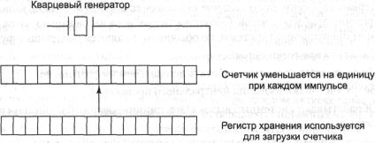
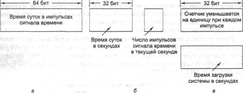
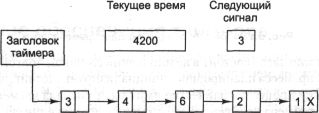

Таймеры
Таймеры (также называемые часами) очень важны для работы любой
многозадачной системы по ряду причин. Среди многих других задач, они следят
за временем суток и не позволяют одному процессу надолго занять центральный
процессор. Программное обеспечение таймера может принимать форму драйвера устройства,
несмотря на то, что таймер не является ни блочным устройством вроде диска, ни
символьным устройством типа мыши. Наше изучение таймеров будет проходить по
тому же сценарию, что и предыдущие разделы: сначала мы рассмотрим аппаратную
часть таймеров, а затем познакомимся с программным обеспечением.
Аппаратная часть таймеров
В компьютерах широко применяются два типа таймеров. Обе схемы сильно отличаются
от наручных и настольных часов. Наиболее простые компьютерные часы привязываются
по частоте к линии питания переменного напряжения 110 или 220 В и вызывают прерывания
при каждом цикле напряжения с частотой 50 или 60 Гц. Такие часы очень широко
применялись ранее, но сейчас являются редкостью. Другой тип часов состоит из
трех компонентов: кварцевого генератора, счетчика и регистра хранения, как показано
на рис. 5.27. Если взять кусок кристалла кварца правильного размера и установить
его в оправу под давлением, то можно заставить его колебаться и выдавать электрический
сигнал с частотой в несколько сот мегагерц. Частота зависит от конкретного кристалла,
но каждый кристалл выдерживает эту частоту с достаточно высокой точностью. С
помощью электроники эту частоту можно поднять до 1 ГГц или даже до еще более
высокой частоты. По крайней мере, одна такая схема обязательно присутствует
в каждом компьютере, обеспечивая сигнал синхронизации для различных цепей компьютера.
Этот сигнал подается на вход декрементного счетчика. Когда содержимое счетчика
достигает нуля, он вызывает прерывание центрального процессора.

Рис. 5.27. Программируемый
таймер
У программируемого таймера обычно есть несколько режимов работы. В режиме
одновибратора при запуске таймера содержимое регистра хранения копируется
в счетчик. Затем содержимое счетчика уменьшается на единицу при каждом импульсе
от кристалла. Когда счетчик достигает нуля, он вызывает прерывание и останавливается
до тех пор, пока он не будет снова явно запущен программным обеспечением. В
режиме генератора прямоугольных импульсов при достижении счетчиком нуля
инициируется прерывание, а содержимое регистра хранения автоматически копируется
в счетчик, и весь процесс повторяется снова бесконечно.
Преимущество программируемого таймера состоит в том, что частота прерываний
от него может управляться программно. Если используется кристалл с частотой
колебаний 500 МГц, то счетчик получает импульс каждые 2 не. При использовании
32-разрядного регистра можно запрограммировать возникновение прерываний через
равные интервалы времени от 2 не до 8,6 с, называемые тиками. Микросхемы
программируемых таймеров обычно содержат два или три независимо программируемых
счетчика и помимо этого обладают целым рядом других функций (например, могут
увеличивать, а не уменьшать значение счетчика, не инициировать прерываний и
т. д.).
Чтобы показания таймера не терялись, пока питание компьютера выключено, часы
большинства компьютеров питаются от аккумулятора. Показания часов считываются
при загрузке операционной системы. Если таких часов у компьютера нет, операционная
система может запросить дату и время при запуске. Кроме того, система может
узнать эти сведения по сети от удаленного хоста. В любом случае эти время и
дата транслируются в количество интервалов таймера с какого-либо момента, например
полуночи 1 января 1970 года по всеобщему скоординированному времени (UTC,
Universal Coordinated Time), как это делает, например, система UNIX. До 1928
года время UTC называлось средним временем по Гринвичу (GMT, Greenwich Mean
Time). В системе Windows время отсчитывается от 1 января 1980 года. При каждом
прерывании от таймера счетчик времени увеличивается на единицу. В операционной
системе обычно присутствуют программы, позволяющие скорректировать показания
системных часов.
Программное обеспечение таймеров
Все, что делает таймер, аппаратно — он инициирует прерывания через определенные
интервалы времени. Все остальное, связанное со временем, должно выполняться
программно драйвером часов. Обязанности драйвера часов варьируются в зависимости
от операционной системы, но обычными являются следующие функции:
1. Следят за временем суток.
2. Не позволяют процессам работать дольше, чем им разрешено.
3. Ведут учет использования центрального процессора.
4. Обрабатывают системный вызов alarm, инициированный процессом пользователя.
5. Поддерживают следящие таймеры для операционной системы.
6. Ведут наблюдение, анализ и сбор статистики.
Первая функция часов, поддерживающая время суток (также называемое истинным
временем), не сложна. Она просто требует увеличения счетчика на единицу при
каждом импульсе сигнала времени часов (рис. 5.28, а). Нужно только следить
за количеством битов в счетчике времени суток. При частоте импульсов сигнала
времени 60 Гц 32-разрядный счетчик переполнится уже за два года. Очевидно, система
не может хранить значение истинного времени в тиках с 1 января 1970 года в 32
бит.
Для данной проблемы возможны три решения. Во-первых, можно использовать 64-разрядный
счетчик, хотя это потребует больших затрат, так как увеличивать значение счетчика
придется помногу раз в секунду (рис. 5.28, б). Второй способ состоит
в хранении времени суток не в тиках (количестве импульсов сигнала времени),
а в секундах, переводя импульсы сигнала времени в секунды при помощи дополнительного
счетчика (рис. 5.28, б). Поскольку 232с — это больше, чем
136 лет, такой метод будет работать вплоть до 22-го века.
Третий метод состоит в том, чтобы учитывать импульсы сигнала времени, но
относительно того момента, в который была загружена машина, а не от фиксированного
внешнего момента. При этом система во время загрузки узнает текущее время, которое
сохраняет в памяти в любом удобном виде. Позднее, при запросе времени, система
складывает хранящееся время загрузки со значением счетчика, чтобы получить текущее
время (рис. 5.28, в).

Рис. 5.28. Три способа
реализации времени суток
Вторая функция часов состоит в недопущении слишком долгой работы процесса.
При запуске процесса планировщик инициализирует счетчик, записывая в него выделенное
этому процессу количество импульсов сигнала времени. При каждом прерывании от
таймера драйвер таймера уменьшает значение счетчика на 1. Когда значение счетчика
достигает нуля, драйвер таймера вызывает планировщик, чтобы тот запустил другой
процесс.
Третья функция часов состоит в учете использования центрального процессора.
Наиболее точно это может быть сделано, если при каждом запуске нового процесса
запускать второй таймер, независимый от основных системных часов. Когда процесс
останавливается, значение таймера считывается, чтобы определить, сколько времени
работал процесс. Чтобы все было правильно, значения второго таймера должны сохраняться
на время прерываний.
Не столь точный, но более простой метод учета состоит в создании указателя
текущего процесса в таблице процессов в виде глобальной переменной. При каждом
импульсе сигнала времени поле текущего процесса в таблице увеличивается на 1.
Таким образом, каждый импульс сигнала времени «заботится» о текущем
процессе. Недостаток этого метода состоит в том, что в случае частых прерываний
во время работы процесса ему все равно будет засчитана работа в течение полного
импульса сигнала времени. Точный учет использования времени центрального процессора
во время прерываний является слишком сложным делом, отнимающим, в свою очередь,
много процессорного времени.
Во многих системах процесс может попросить операционную систему выдать ему
сигнал предупреждения после определенного интервала времени. Предупреждение
может быть сигналом, прерыванием, сообщением и т. п. Такие предупреждения нужны,
например, для работы в сети, при которой пакет, не получивший подтверждения
в течение определенного интервала времени, должен быть передан повторно. Другим
приложением может быть обучающая программа, ожидающая ответа на вопрос в течение
установленного интервала времени.
Если драйвер часов управляет достаточным количеством таймеров, он может установить
таймер для каждого запроса. Если физических таймеров недостаточно, они легко
могут быть смоделированы программно. Один из способов реализации большого числа
виртуальных таймеров состоит в создании таблицы, хранящей все времена сигналов
для обрабатываемых таймеров, а также переменная, в которой хранится время срабатывания
ближайшего таймера. При каждом обновлении времени суток драйвер проверяет, не
пора ли подавать сигнал от ближайшего таймера. При этом ищется следующий по
времени таймер.
Если ожидается много сигналов, то более эффективным считается реализовать
их в виде сортированного связного списка, как показано на рис. 5.29. Каждый
элемент списка содержит число импульсов сигнала времени относительно предыдущего
таймера. В данном примере сигналы должны быть поданы в моменты времени 4203,
4207, 4213, 4215 и 4216.

Рис. 5.29. Моделирование
нескольких виртуальных таймеров
На рис. 5.29 следующее прерывание произойдет через 3 тика. На каждом тике
значение переменной Next signal, хранящей число тиков, оставшееся до
подачи следующего сигнала, уменьшается на 1. Когда значение этой переменной
достигает нуля, подается сигнал в соответствии с первым элементом списка, который
затем удаляется из списка. После этого переменной Next signal присваивается
значение следующего элемента списка, то есть 4 в нашем примере.
Обратите внимание, что за время прерывания от таймера драйвер часов должен
выполнить несколько действий: увеличить показания часов истинного времени, уменьшить
значение кванта времени, выделенного текущему процессу, и сравнить его с нулем,
выполнить операцию учета использования центрального процессора и уменьшить счетчик
таймера тревоги. Однако все эти операции должны быть тщательно оптимизированы
по времени исполнения, так как они будут повторяться много раз в секунду.
Операционной системе также требуются таймеры. Они называются сторожевыми
таймерами. Например, гибкие диски не вращаются, пока ими не пользуются,
чтобы избежать слишком быстрого изнашивания носителей и головок дисковода. Когда
требуются данные с гибкого диска, следует запустить двигатель. Только если гибкий
диск вращается с полной скоростью, может начаться операция ввода-вывода. Когда
процесс пытается читать данные с находящегося в состоянии покоя гибкого диска,
драйвер НГМД запускает двигатель и устанавливает сторожевой таймер, чтобы тот
инициировал прерывание спустя время, достаточное для разгона диска. Сторожевой
таймер необходим, так как накопители на гибких дисках не умеют формировать прерывания,
сообщающие о том, что гибкий диск достаточно разогнался.
Механизм обработки сторожевых таймеров, используемый драйвером часов, тот
же, что применяется для сигналов пользователя. Единственное отличие состоит
в том, что когда таймер срабатывает, вместо подачи сигнала драйвер часов вызывает
процедуру, предоставляемую обратившимся к нему процессом. Эта процедура является
частью процесса. Она может сделать все, что нужно, даже вызвать прерывание,
хотя внутри ядра прерывания часто бывают неудобны, а сигналов не существует.
Вот почему предоставляется механизм сторожевых таймеров. Следует заметить, что
этот механизм работает, только если драйвер таймера и вызываемая им процедура
находятся в одном адресном пространстве.
Последняя функция таймеров в нашем списке — это сбор статистики. В некоторых
операционных системах предоставляется механизм построения гистограммы, показывающей
положение счетчика команд программы пользователя. Таким образом, пользователь
может видеть, какие процедуры его программы какой процент процессорного времени
потребляют. Для этого на каждом тике драйвер часов должен проверить, собирается
ли статистика по текущему процессу, и если да, то определяет, в каком диапазоне
адресов находится счетчик команд. После этого значение счетчика, соответствующее
этому диапазону, увеличивается на единицу. Такой же метод может применяться
для получения статистики по самой операционной системе.
«Мягкие» таймеры
У большинства компьютеров есть второй программируемый таймер, который может
быть установлен для формирования прерываний с той частотой, какая требуется
программе. Этот таймер представляет собой добавление к основному системному
таймеру, описанному в предыдущих разделах. До тех пор пока частота прерываний
невелика, никаких проблем, связанных с использованием второго таймера для прикладных
целей, не возникает. Трудности появляются, когда частота прерываний прикладного
таймера становится очень высокой. Ниже мы кратко опишем схему программного таймера,
хорошо работающую в различных обстоятельствах, даже на высоких частотах.Идея
обязана своим появлением Арону и Друшелю [15]. Подробности, пожалуйста, смотрите
в этой статье.
Обычно есть два способа управления вводом-выводом: прерывания и опрос. Прерывания
обладают низким временем задержки, то есть они происходят немедленно после самого
события или с минимальной задержкой. С другой стороны, в современных центральных
процессорах прерываниям сопутствуют значительные накладные расходы, связанные
с необходимостью переключения контекста, а также с их влиянием на конвейер,
кэш и буфер быстрого преобразования адреса TLB.
Вместо прерываний может использоваться опрос приложением какого-либо порта
или слова памяти при ожидании события. Этот метод позволяет избежать прерываний,
но может привести к значительным задержкам, то есть к замедленной реакции приложения
на ожидаемое им событие. Это связано с тем, что событие может произойти сразу
после опроса, в результате чего задержка реакции составит почти целый интервал
опроса. В среднем задержка составит половину периода опроса.
Для некоторых приложений ни накладные расходы прерываний, ни задержка опроса
неприемлемы. Возьмите, к примеру, такую высокоскоростную сеть, как гигабитная
сеть Ethernet. Эта сеть способна принимать или доставлять пакет полного размера
каждые 12 мкс. Для поддержания оптимальной производительности на выходе надо
посылать новый пакет каждые 12 мкс.
Один из способов достижения такой скорости состоит в том, что по завершении
передачи каждого пакета происходит прерывание, либо устанавливается таймер,
инициирующий прерывания каждые 12 мкс. Недостаток этого метода — как показали
измерения, для процессора Pentium II с частотой 300 МГц одно прерывание занимает
4,45 мкс (1335 тактов процессора) [15]. Этот показатель накладных расходов вряд
ли улучшился с 70-х годов. Например, у большинства мини-компьютеров прерывание
занимает всего четыре цикла шины, необходимых для помещения в стек счетчика
команд и слова состояния процессора, и для загрузки новых значений PC и PSW.
Сегодняшним процессорам приходится иметь дело с конвейером, MMU, TLB и кэшем,
что увеличивает накладные расходы в несколько раз. Со временем эти эффекты только
ухудшаются, не позволяя использовать прерывания от таймера с высокой частотой.
Идея «мягких» таймеров позволяет избежать лишних прерываний.
Вместо этого ядро, вызываемое по какой-либо другой причине, перед тем как вернуться
в режим пользователя, проверяет значение часов реального времени, чтобы проверить,
не истек ли период ожидания «мягкого» таймера. Если время ожидания
истекло, выполняется планируемое событие (например, передача пакета или проверка,
не пришел ли пакет). При этом отпадает необходимость специального переключения
в режим ядра, так как система и так уже находится в режиме ядра. Когда необходимые
действия выполнены, «мягкий» таймер снова устанавливается для ожидания
следующего события. Все, что для этого требуется — это взять текущее значение
часов, прибавить к нему интервал ожидания и сохранить сумму в ячейке таймера.
«Мягкие» таймеры устанавливаются и срабатывают с той скоростью,
с которой выполняются входы в ядро по другим причинам. К этим причинам относятся:
1. Системные вызовы.
2. Ошибки преобразования адреса TLB.
3. Отсутствие страницы памяти.
4. Прерывания ввода-вывода.
5. Временное отсутствие работы для центрального процессора.
Для определения частоты этих событий Арон и Друшель произвели измерения с
несколькими вариантами загрузки центрального процессора, включая полностью загруженный
web-сервер, выполняющий ограниченное скоростью вычислений фоновое задание, воспроизведение
скачиваемого с Интернета аудио в режиме реального времени, а также перекомпиляцию
ядра системы UNIX. Средний период обращений к ядру варьировался в диапазоне
от 2 до 18 мкс. Примерно половину этих обращений составляли системные вызовы.
Таким образом, в первом приближении вызов «мягкого» таймера через
каждые 12 мкс является вполне выполнимым делом, хотя при этом иногда возможен
пропуск временных сроков. Однако для таких приложений, как отсылка пакетов,
лучше иногда опоздать с отправкой пакета на 10 мкс, чем затрачивать на прерывания
до 35 % времени центрального процессора.
Конечно, могут быть периоды, когда нет системных вызовов, ошибок TLB или
отсутствия страниц памяти. В этом случае «мягкий» таймер не будет
обрабатываться и остановится. Для таких интервалов времени может быть принудительно
установлена верхняя граница при помощи второго аппаратного таймера, срабатывающего,
скажем, раз в 1 мс. Если приложению достаточно всего лишь 1000 пакетов в секунду,
тогда комбинация «мягких» таймеров и низкочастотного аппаратного
таймера может оказаться лучше, чем ввод-вывод, основанный только на прерываниях
или только на опросе.